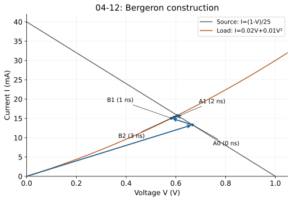

第 04 章 传输线的暂态与应用
04.1 目标与先修
正弦稳态关注“长期重复后是什么样”，暂态关注“开关刚变化后每一时刻发生什么”。本章用阶跃、传播延迟和反射图求接收端波形，并解释源端终接、有限上升时间及 HSPICE 离散模型。第 03 章的反射系数仍适用，但实电阻阶跃模型不需要把电压写成复数相量。
单位阶跃 在 为 0、 为 1。幅度为 A、在 开始的阶跃写作 。在理想不连续点采用左、右极限即可，无须争论单个时刻的取值。一个脉冲可写为 ，因此可由两个阶跃响应相减得到。
04.2 初始波为何不是源开路电压
假定无耗线、初始无储能、实源电阻 、实负载 ，线的特性阻抗为 ，单程延迟为 。源开路阶跃为 。在反射返回前，源不知道远端是什么，它所激发的前进波满足 。源端电压方程给出初始波
这里参与分压的是 与 ，不是 与 。远端负载在 t=τ 才收到这个波。
定义两端反射系数
求源端的反射系数时，把独立电压源置零，即理想电压源短路；返回波看到的是 。源仍在维持已经施加的阶跃，不能把“置零计算反射”误认为真实电源被关闭。
例 04-1（原创，匹配接收） V， ns。 V，。负载在 1 ns 从 0 跳至 2/3 V，此后不变。源在 t=0 就是 2/3 V。最后直流分压 V 与结果一致。
例 04-2（原创，开路接收） 改为开路，，首次负载增量为 V，大于源开路电压。它是暂态过冲，后续源反射会改变电压；不能立即据此判定违背能量守恒。
04.3 用反射图逐事件累加
反射图横轴是位置，纵轴是时间，波沿斜线从一端到另一端。每次传播耗时 τ；每遇终端，把来波电压乘该端反射系数得到离开的波。端点总电压的增量等于来波加反射波，不是只取反射波。
源端 负载端
t=0 A0 ─────────╲
t=τ 到达，增量 (1+ΓL)A0
╱────────── ΓL A0
t=2τ 到达源端，再发 ΓgΓL A0
──────────╲
t=3τ 负载再增加 (1+ΓL)ΓgΓL A0
这是事件图，斜线只表示先后与方向，非按物理比例绘制。令 ，第 n 次到达负载的前进阶跃为 ，到达时间 。所以
对应电流增量是 。几何级数是每一项都乘同一比值 q 的和；当 ，
最后一个等式可把反射系数定义代入化简，提供独立直流检查。理想无耗且两端全反射时可能 ，不能强行用收敛公式。
例 04-3（原创，非振荡收敛） V， ns。 V，。
| 到达负载时间 | 前进波增量 | 负载电压增量 | 累计负载电压 |
|---|---|---|---|
| 1 ns | 1/3 V | 1/2 V | 0.500000 V |
| 3 ns | 1/18 V | 1/12 V | 0.583333 V |
| 5 ns | 1/108 V | 1/72 V | 0.597222 V |
极限 V，与直流 V 一致。每一行是增加到已有电压之上，不可每到一个新波就把旧电压清零。
例 04-4（原创，交替过冲） 回到例 04-2：。负载在 1、3、5 ns 的增量分别为 V，累计 V，最终趋于 1 V。负号表示下一次增量向下，不表示负载总电压一定为负。
04.4 源终接、并联终接与特殊极限
若 ，负载不反射，称并联或远端匹配终接。若驱动器内阻加外接串联电阻之和等于 ，则 ，返回源端的波被吸收；这叫源端串联终接。
例 04-5（原创，源匹配） V，，负载开路。源初发 0.5 V；负载在 τ 接到波后加倍到 1 V；返回波在 2τ 到源端后不再反射。负载不是“只能拿到半个电压”。源端在 t=0 为 0.5 V，在 2τ 后为 1 V。
例 04-6（原创，极限变化） 如果同样源匹配但负载短路，则 ，负载电压恒零，首个到达的负载电流为 mA；返回后源端电压降为零，稳态电流为 mA。若源内阻再改为理想零欧、负载开路，则 ，理想模型不耗散，电压会持续往返跳变。现实中的损耗、有限带宽会改变这一理想行为。
端点是开路并不代表整段线内电流为零；开路条件只强制该端总电流为零。把整条线立即当开路会漏掉充电过程。
04.5 电容、电感终端与有限边沿
频率相关负载不能用一个常数反射系数生成所有时刻。以电容 接地为例，在第二次波到达前，把到达负载的恒定入射阶跃 A 等效为开路电压 2A、串联电阻 的驱动：
若电容初始为零，解为
适用到后续源反射改变入射波之前。指数解来自一阶方程：误差 的下降速率正比于误差本身，时间常数为 。刚到达时电容电压不能突变，表现似短路；久后电流归零，表现似开路。
例 04-7（原创） pF，A=0.5 V，故时间常数为 1 ns。到达后 1 ns， V；到达后 3 ns 为 0.950213 V。如果源匹配，反射不再回来，公式一直适用；如果源不匹配且往返时间较短，必须叠加后续改变，不能无限沿用这一单次响应。
电感终端满足 ，同样用 ，得到 ，。最初电流不能突变，表现似开路；长期理想电感表现似短路。
例 04-8（原创，电感条件变化） nH、，时间常数 ns。A=0.5 V，刚到达电压为 1 V；到达后 1 ns 电压降为 0.367879 V，电流升至 12.6424 mA。电容与电感的首末反射极限相反。
有限上升时间把理想跳变平滑化。线性系统中，可将连续边沿分成多个小阶跃逐个叠加；因此传播延时并未消失，反射只是可能与边沿重叠。比较 ，并看源负载条件，不能只看时钟重复频率。
04.6 HSPICE 和分段模型应该验证什么
本班补充课件先从几何提取 RLGC，再建立瞬态仿真。理解仿真时先确定单位长度参数、总长度、端接、源幅度和上升时间。以下是理想无耗线的教学网表示意（不同版本输出指令可能需要调整，本次未运行 HSPICE）：
* 1 V step, 50 ohm source, 1 ns ideal line, 150 ohm load
VSTEP in 0 PULSE(0 1 0 20p 20p 20n 40n)
RS in a 50
T1 a 0 b 0 Z0=50 TD=1n
RL b 0 150
.TRAN 5p 10n
.PRINT TRAN V(a) V(b)
.END
这里源匹配，A=0.5 V，，负载约在 1 ns 后上升至 0.75 V，返回源端后不再反射。网表是可解释的模型，而不是“软件画出什么就信什么”。
若用 N 段 LC 梯形网络替代无耗线，每段 、。网格越粗，高频数值色散越明显；应让每段延时 远小于最短关心的时间尺度，并通过加密网格检查收敛。
例 04-9（原创，基础与加密） 50 Ω 线、总延迟 1 ns。由 nH、 pF，分 20 段时每段 2.5 nH、1 pF，段延迟 50 ps。分 100 段则每段 0.5 nH、0.2 pF，段延迟 10 ps。对 20 ps 边沿，20 段明显太粗，100 段仍须加密比较，不能仅因段数大就宣布准确。这里的总 LC 是分布参数之和，不可直接把整条线缩成单个串 L、并 C 而期望保留传播。
04.6A 任意观测点与有限宽脉冲
端点表不是整个传输线上的波形。为避免改变03章的坐标，把观测点记为 ，即距源x，源x=0、负载x=l。正向阶跃 在源端于2nτ出发，到x的时间是 。它在负载反射成 ，再回到x的时间是 。所以
同一到达事件对电压是加号，对电流可能是负号，这由全书电流正方向决定。给定有限观察时刻，只保留已经到达的项，不能把无穷稳态和当成瞬时响应。
例 04-10（原创，在线中部观察） Ug=1 V、Rg=Z0=50Ω、末端开路、τ=1 ns。在中点x=l/2，t<0.5 ns时V=I=0；0.5至1.5 ns只有0.5 V正向波，因此V=0.5 V、I=10 mA；1.5 ns后开路反射0.5 V抵达，V=1 V、I=0。线中部电流持续1 ns后消失，不能因为最终开路就把全过程电流设零。
若源发宽度Tp的脉冲，把电源写成两个阶跃之差。在线性、时不变的同一电路里，若单位阶跃的响应为s(t)，单位脉冲响应就是 。反射的上升沿与下降沿分别有自己的事件表；先排列所有时刻，再累加重叠事件。
例 04-11（原创，改变实质条件） Ug=1 V、Rg=25Ω、Z0=50Ω、RL=100Ω、τ=1 ns，脉宽Tp=2 ns。A0=2/3、Γg=−1/3、ΓL=1/3、q=−1/9。阶跃负载在1、3、5 ns的增量依次为8/9、−8/81、8/729 V。脉冲下降沿使这份增量表延后2 ns并反号，因此：1 ns增加8/9；3 ns同时发生−8/81和−8/9，合计−80/81，累计−8/81 V；5 ns同时发生8/729和8/81，合计80/729，累计8/729 V。脉冲结束后可以出现小负电压，不是把阶跃解简单截断到零。若电路包含钳位二极管，这个负值可能触发非线性，线性叠加需要重新审查。

图用例04-3的q=1/6画出前五次跨线传播；右侧是负载累计电压，不是反射波单独幅度。把斜线的波幅误当端点总电压，是读反弹图最常见的错误。
04.6B Bergeron图：不用固定反射系数处理非线性
线本身仍假设无耗、无色散，负载可有瞬时非线性关系 。若f不是过原点直线，V/I会随工作点变化，不能把某一次的V/I塞进常数Γ后用于全部过程。
用总波分解，任一点有 、。正向波从源到负载延迟τ，因此
反向波从负载到源同样延迟τ，因此
这两式没有假设负载是电阻。横轴V、纵轴I时，第一式给经过上一个源点、斜率−1/Z0的直线，与负载I–V曲线相交得到下一负载点；第二式给经过上一个负载点、斜率+1/Z0的直线，与源I–V曲线相交得到下一源点。源曲线为 。注意源和负载两端电流在这里都取沿线从源到负载，不能中途换成06章“两端均指入网络”的约定。
初始无储能时返回波为零，故t=0的源点同时满足 和源曲线，得到V_S=A0。之后每走一次源/负载曲线，物理时间增加τ。几何交点法与代数解方程完全等价；计算器或脚本求交点不是改变物理方法。
例 04-12（原创，非线性基础） Ug=1 V、Rg=25Ω、Z0=50Ω、τ=1 ns，负载在本题正电压工作区的关系为 A，其中两个系数单位分别S和A/V²。初始源点为 。第一次到达负载时守恒量 ，所以
解二次方程，取物理工作区V≥0的根 V；I=0.0150269 A。另一负根不在声明的器件工作区，不能作为本题答案。返回源的波 V。到2 ns时，源重新发出的总正向波为 V，源总电压A+B=0.610215 V。到3 ns时负载又解 ，得约0.603761 V。
稳态可不作无限次迭代，直接联立直流源线与负载曲线：，得 V。这是独立检查，不代表第一次到达就达到稳态。

图中A0是初发源点，B1是1 ns负载点，A1是2 ns源点，B2是3 ns负载点。每一段斜线只表达前一时刻与后一时刻之间的传播约束，不表示电路在两点之间连续沿斜线扫过。
例 04-13（原创，分段钳位变式） 匹配源发出A=1 V入射阶跃，Z0=50Ω。负载模型为：V≤1 V时I=0；V>1 V时 A。先假设未导通，线约束V+50I=2给V=2 V，与未导通条件矛盾。改用导通支路，，得V=7/6 V、I=1/60 A，满足V>1。反射波B=V−A=1/6 V。若入射改为A=0.4 V，未导通解V=0.8 V有效、B=0.4 V。两次有效Γ分别1/6与1，足以反证不能用一个常数Γ描述这个负载。
若负载有电容、电感、迟滞或其他记忆，I不是单值的瞬时f(V)，应同时更新储能状态；单张静态I–V曲线不能代替动态方程。这是Bergeron基本图法的边界。
来源勘误必须回到方程
本班论文PDF第2页式(3)将初发幅度的分子印为Rs。按源端KVL与 应为Z0；其例图的初始0.625 V也与 一致。本文因此使用经边界验证的Z0分子。论文第3页若干行的坐标/相位排印也须按上述两条传播不变量重新推导，不照搬可疑符号。论文末页非线性算例所列系数与图中电平亦未能直接复现，故本书给独立参数的例04-12，明确不把原图数值当已核实结果。
04.6C 串联电感不连续与AC终接
04.5的电感例题是“电感接在终端两导体之间”。但第二章补充1第18页画的是两段线之间的串联电感，二者不能互换。设右侧是一条无反射返回的Z0线，左侧到来的阶跃幅度A，右侧传输电压T。串联电流连续，所以 ，即 。左节点电压A+B、右节点电压T，两者差为2B，等于电感电压：
初始I=0，解得 ，。因此 、，左节点从2A衰减到A，右节点从0升至A。与末端并联电感的 时间常数差一倍，因为电感两侧各有一个Z0参与。
例 04-14（原创，反例辨析） Z0=50Ω、L=20 nH、A=0.5 V，串联不连续时间常数0.2 ns。到0.2 ns时左节点0.683940 V，右节点0.316060 V，电流6.32121 mA。两节点之差0.367879 V是电感两端电压；不能把左节点本身当电感电压，也不能套04.5的接地电感解。
AC终接把电阻Rt与电容Ct串联后跨接在线末端。电容初始电压零，第一瞬间近似Rt负载；长期电容开路，因此没有直流终接电流。若入射恒为A且没有后续返回波，电容电压Vc满足 、。时间常数为 ，线端总电压是 ，不是只有Vc。
例 04-15（原创，AC终接设计） Z0=Rt=50Ω，A=0.5 V，Ct=20 pF。初始电流1/100=10 mA、VL=0.5 V，初始反射为零。τc=2 ns，，，所以 V，渐近1 V。长期有B=0.5 V反射；“AC匹配”不等于所有时刻或所有频率都无反射。若想在短边沿期间近似电阻终接，应使电容在相应高频下阻抗远小于Rt；脉宽、码型和允许下垂也必须一起检查。
04.6D 从几何、单位到分段模型的综合核对
英寸与mil是长度单位：1 in=25.4 mm，1 mil=0.001 in=25.4 μm。每米参数换成每英寸要乘0.0254；每英寸参数换成每米要除0.0254，方向不可反。
例 04-16（按本班参数独立复算） 补充1第20–26页例子为5 in线、Z0=50Ω、有效介电常数约2.84、源30Ω、0到2 V、100 ps边沿、开路接收。这里εeff由几何模型给出，不能误用基板εr=4代替。
线长0.127 m，速度 m/s，单程延迟约713.414 ps。初发A0=2×50/80=1.25 V，Γg=−0.25、ΓL=1。因此负载在τ、3τ、5τ的累计分别为2.5、1.875、2.03125 V，最终2 V。若源端增加20Ω串联电阻，Rg总值为50Ω，负载首次到达就跳到2 V、以后无往返增量，但源端初始只有1 V。
若要求每个LC段延迟不超过tr/10，由 得 ，向上取整数72。L总=Z0τ≈35.6707 nH，C总=τ/Z0≈14.2683 pF；每段约0.495426 nH、0.198171 pF。此规则是初选网格，不能替代加密收敛检查。
对均匀LC离散梯形线，离散节点电压满足 。试代 ，左边因子为 ，所以
理想连续线每段相位是 ；离散线相位却是 ，只有参数足够小时两者接近。当右边需要大于1的反正弦输入时，这个梯形模型已进入人工截止，不能代表原来无截止的理想TEM线。这从数学上解释了课件5段模型边沿失真更大。
例 04-17（原创，自主选择离散数） 总延迟1 ns，希望保留2 GHz正弦相位。连续线总相位4π。N=10时离散总相位 ，误差约8.13%；N=100时误差约0.0659%。应先指定需要保留的频带和允许误差，再选N，不能只说“100段总是够用”。
HSPICE补充第4–6页打印L′=3.055149×10⁻⁷ H/m、C′=1.030686×10⁻¹⁰ F/m。按所列数值，每英寸分别为7.76008 nH/in、2.61794 pF/in，Z0=54.4444Ω，5 in延时712.661 ps。页上标注7.62 nH、2.54 pF用了不同舍入参数，且这组场求解值不是恰好50Ω。比较手算与仿真时应保持同一组参数；不能把两组波形差异全部说成求解器误差。本书未运行HSPICE，以上仅为原页数值复算与模型解释。
04.6E 读懂场提取与W元件的输入输出
课程有两条建模路线，输入不能混淆。第一条由几何、材料和参考导体经场求解器提取RLGC，再送入传输线元件。第二条直接给已知RLGC。前者回答“这块截面是什么线”，后者回答“已知这条线，激励后会怎样”。暂态仿真本身不会替没有定义几何的人猜出正确的特性阻抗。
本班第二章补充2第1–3页的字段可按依赖顺序读：.MATERIAL 定义介质的ER；.SHAPE ... WIDTH ... HEIGHT 定义导体横截面；.LAYERSTACK 从参考导体到介质层依次定义材料和厚度；.CONDUCTOR ... ORIGIN 把导体截面放到指定位置；.MODEL ... MODELTYPE=FieldSolver 把上述对象组装；W元件再指定信号导体数N、两端节点、总长度和模型名。多导体系统的地是共同参考导体，不计入N；每个信号导体仍有近端与远端节点。
例 04-18（原页字段解释与实质变式） 课件单线截面采用宽5 mil、高1 mil的金属条，地厚0.7 mil，其上介质厚3.2 mil、εr=4。若坐标原点在地底面，金属条底面放在y=3.9 mil是0.7+3.2；若误放到y=3.2 mil，会改变实际离地距离。若把介质厚度改为6.4 mil，不能只把W元件总长度加倍；前者改变截面场和每米参数，后者只增加原截面的总传播距离。该例用于读模型，本文未执行场求解器，所以不宣称新截面的精确Z0。
直接给RLGC时，可用下列与课堂W元件写法一致的教学输入。单位采用SI；N=1 表示一个信号导体，两个0是各端的参考地；L是物理长度0.127 m，Lo/Co是每米量，不是乘过长度的总量。
* Teaching example: printed RLGC from class, not nominal 50 ohms
VSTEP src 0 PULSE(0 2 0 100p 100p 10n 30n)
RS src in 30
W1 N=1 in 0 out 0 RLGCMODEL=demo l=0.127
.MODEL demo W MODELTYPE=RLGC N=1
+ Lo=3.055149e-7
+ Co=1.030686e-10
+ Ro=0
+ Go=0
RLOAD out 0 1e6
.TRAN 1p 20n
.PROBE TRAN V(in) V(out)
.END
PULSE的七个数依次是低电平、高电平、延迟、上升时间、下降时间、高电平持续时间、周期。这里100 ps边沿不是理想阶跃；当用反射台阶作对比时应比较台阶之间的平台值，而不是宣称跳变瞬间完全相同。1 MΩ是近似开路，ΓL略小于1，不能把精确功率耗散直接取零。.TRAN的1 ps是输出/分析请求中的时间尺度，实际内部步长行为还受软件版本和选项控制。
例 04-19（原创，自主核查仿真） 给定上述每米参数，手算Z0≈54.4444Ω、τ≈712.661 ps。初始波应约 V，近开路负载首个平台应约2.578806 V，而不是名义50Ω模型的2.5 V。若仿真结果差很多，依次查单位、总长度、端点顺序、源内阻与负载，再查时间步长；不要先调参数让曲线“看起来像教材”。RLOAD若改为Z0，则首波不再倍增，接收端平台约为1.289473 V，这是一项能揭示终接接错的实质测试。
HSPICE为商业工具，本轮没有运行环境或许可证核验证据。以上网表只完成原页语义对照与解析预测，未声称已编译或已执行；数值核验脚本检查手算参数和边界，不能替代HSPICE运行。
04.7 渐进练习
均为原创。解析。
04-1 反射图中，为什么首次负载变化在 τ，而首次返回源端在 2τ？负载反射波为 0.2 V 是否等于负载电压增加 0.2 V？
04-2 V，，负载 100 Ω，τ=2 ns，求初发波、负载首个台阶与最终电压。
04-3 V， ns。列前三次负载到达时的增量与累计值，求极限。
04-4 50 Ω 匹配源驱动开路负载， V，τ=1 ns。源发出宽 3 ns 的矩形脉冲，求负载理想波形起止时间和幅度。
04-5 源匹配，入射阶跃 A=1 V，50 Ω 线接 10 pF 电容。求到达后 0.5 ns 的电压与负载电流，并检验 。
04-6 75 Ω 无耗线总延迟 2 ns，分为 40 段 LC。求每段 L、C 和延迟；判断对 10 ps 边沿是否足够，并说明怎样验证。
04-7 事件叠加 沿用例04-11但脉宽改为1 ns。列t=1、2、3、4 ns后负载电压，区分上升沿反射与下降沿反射。
04-8 非线性作图 匹配源经50Ω线送来A=0.5 V阶跃，负载在V≥0满足I=0.01V+0.01V² A。求首次负载V、I、反射B，并检验守恒量。若误用初始斜率的100Ω电阻近似，得到的V是多少？
04-9 拓扑改变 50Ω匹配线上插入串联50 nH电感，入射A=1 V。求不连续处开始响应0.5 ns后的两侧节点电压。若该电感改为线末端接地，说明时间常数与最终值怎样变化。
04-10 设计与单位 一条75Ω线，εeff=2.25，长度4 in，边沿80 ps。求延迟、满足段延迟≤tr/10的最小整数段数和每段L/C。若驱动器内阻20Ω、接收端开路，选源串联终接电阻。
04-11 软件读模 上述网表若把Lo错误填写为总电感 ，Co仍为原每米值，软件理解的Z0和总延迟相对原值分别乘什么因子？若只是希望线长减半，应该改哪个字段？
04.8 来源
主要依据：第二章补充 1 第 8–20、23–26 页、第二章补充 2 第 3–9 页、基于作图法的传输线时域响应分析。例题、事件表及网表参数均为原创；网表未实测，不作为 HSPICE 版本兼容性承诺。第 10 章继续讨论非理想互连。